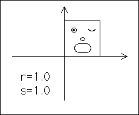
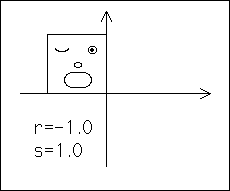
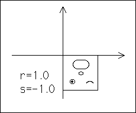

Reflections
Negative r reflects across the y-axis.


Negative s reflects across the x-axis.

Reflection across both the x- and y-axes is equivalent to rotation by
180°
about the origin.
Return to
Geometry of Plane Transformations
.